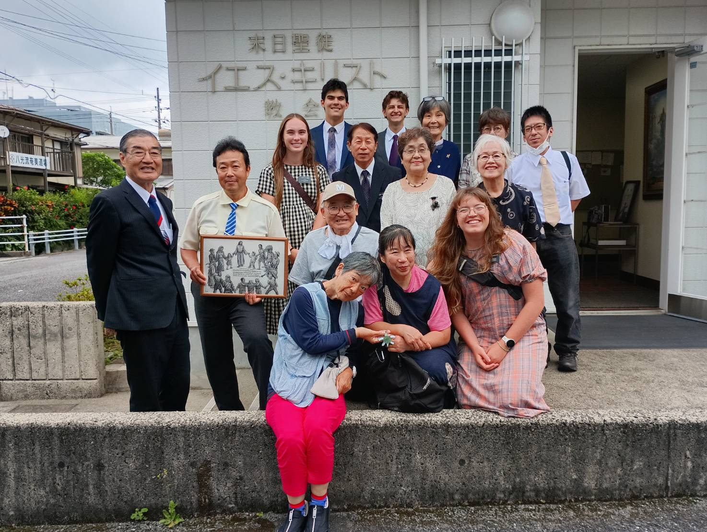

 I'm Kier Fahsbender, a student at Brigham Young University pursuing a major in finance.
I'm Kier Fahsbender, a student at Brigham Young University pursuing a major in finance.My background includes team leadership, customer service, and an internship with Amada Senior Care.
Please explore my résumé to learn more about my experience, skills, and interests.
During my two years of volunteer service in Japan, I became proficient in Japanese and served in team leadership roles.
This experience strengthened my ability to communicate across cultures, adapt to new environments, and work with others to accomplish shared goals. A quote I like:
"The cost of procrastination is the life you could have lived"
This quote reminds me that progress begins with action.
In my studies, internship, and personal development, I strive to eliminate the feeling of regret by cutting off procrastination and being committed.
To me, commitment embodies dedicating 100% of your effort to accomplishing your goals
Featured Project: Amada Senior Care

I created this post as part of my internship with Amada Senior Care.